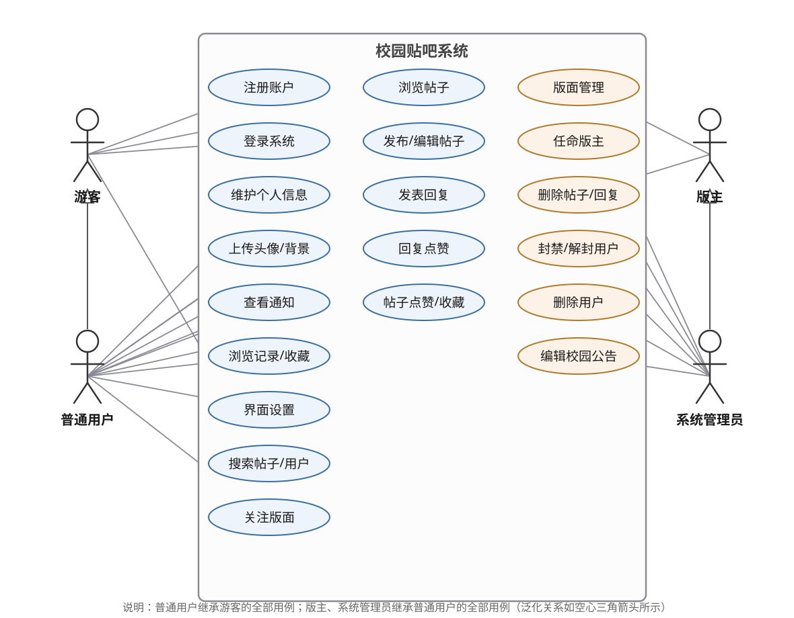
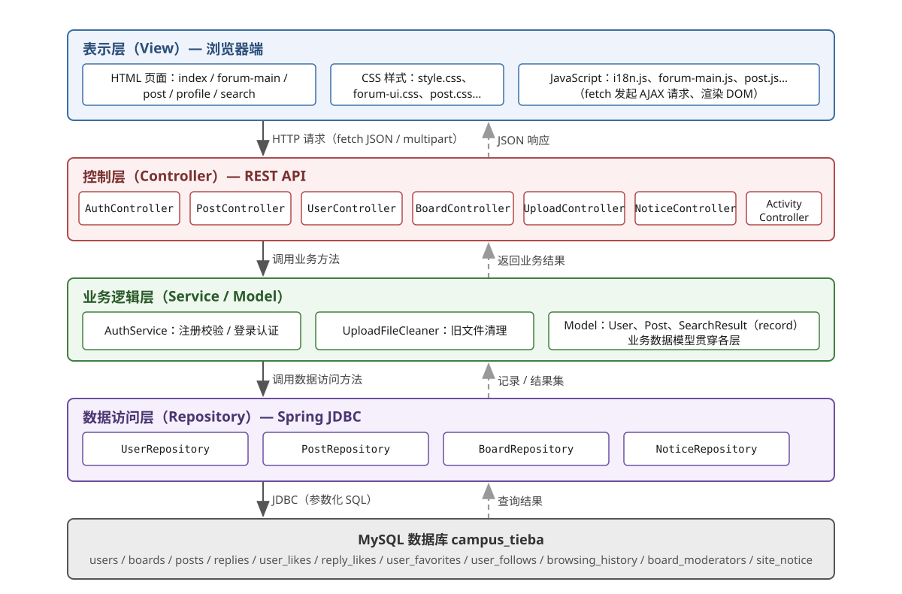
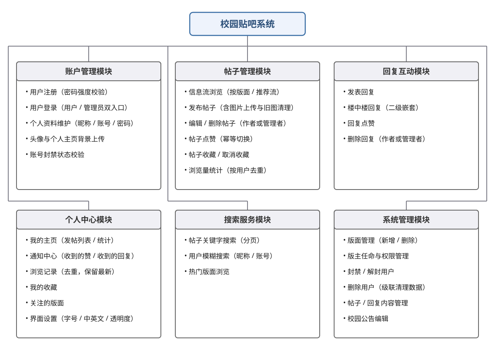
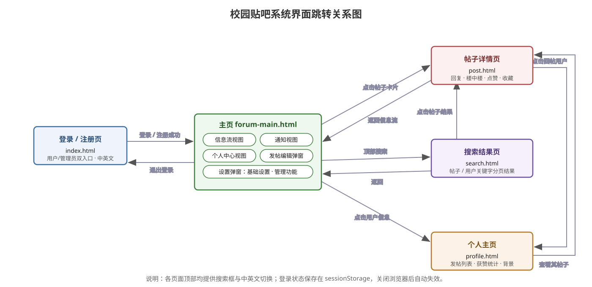
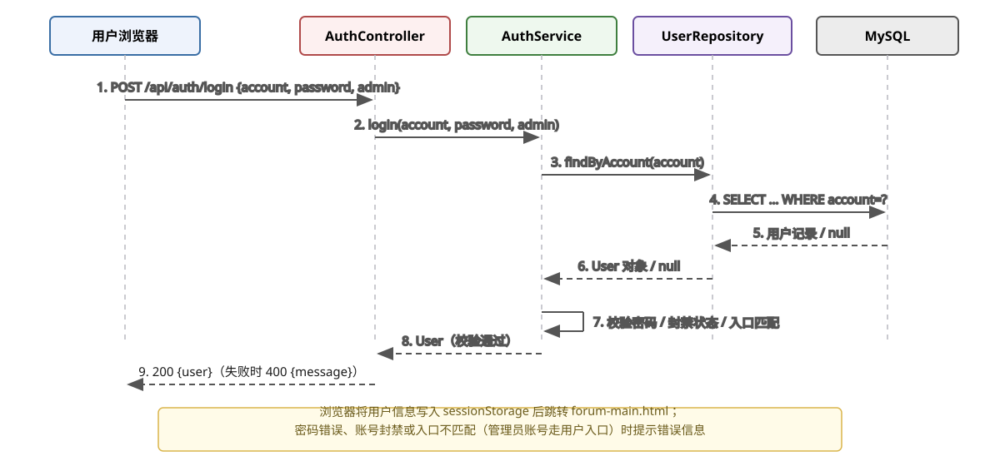
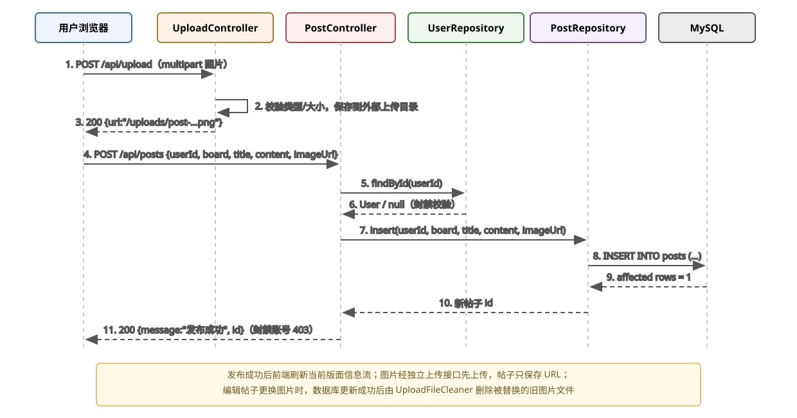
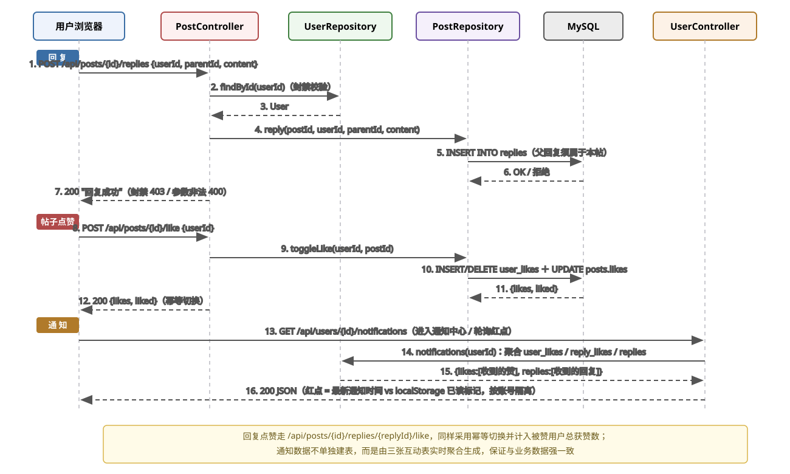
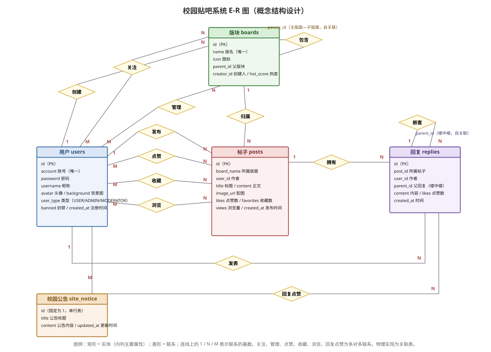
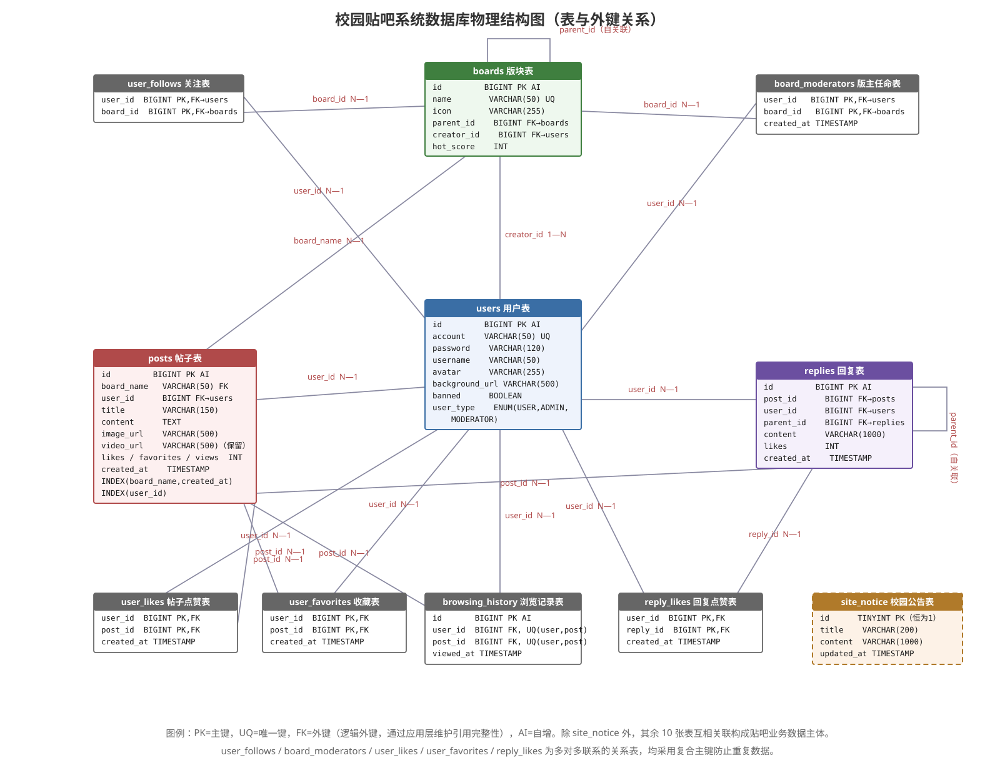

需求分析和系统详细设计书
课题名称：校园贴吧系统（Campus Tieba）
组 号：____________
小组成员：____________
指导教师：____________
2026 年 9 月
1、系统需求
1.1 功能需求（1.1.1 系统角色及其功能 / 1.1.2 需求规定 / 1.1.3 业务实体分析）
1.2 非功能性需求
2、系统设计
2.1 基于 MVC 的软件架构设计
2.2 功能模块设计（模块划分 / 账户管理 / 帖子与互动 / 系统管理）
2.3 数据库设计（逻辑结构设计 / 物理结构设计）
插图目录：图1 系统用例图；图2 软件架构图；图3 功能模块划分图；图4 界面跳转关系图；图5 用户登录时序图；图6 发布帖子时序图；图7 回复、点赞与通知时序图；图8 E-R 图；图9 数据库物理结构图。
校园贴吧系统是一个面向校园场景的轻量级网络论坛（BBS），为在校学生与教职员工提供以"版面—帖子—回复"为核心的内容发布与互动平台。系统采用 B/S 架构，用户通过浏览器完成注册登录、浏览发帖、回复点赞、关注版面等操作；版主与系统管理员通过同一系统的管理入口完成内容治理。本章从角色识别、功能需求规定、业务实体分析与非功能性需求四个方面对系统需求进行描述。
系统共有四类角色，后三类角色逐级继承前一角色的全部功能（权限向下包含）：
| 角色名称 | 说明 |
|---|---|
| 游客 | 未登录的访客。可浏览各版面帖子信息流、查看帖子详情与回复、使用帖子/用户搜索、查看校园公告，并可注册账户。 |
| 普通用户（USER） | 完成注册并登录的用户。继承游客全部功能，另可：发布/编辑/删除自己的帖子（支持配图）、发表回复与楼中楼回复、对帖子和回复点赞、收藏/取消收藏帖子、关注/取关版面、维护个人资料（头像、主页背景、昵称、密码）、查看通知中心（收到的赞 / 收到的回复）与浏览记录、我的收藏、进行界面个性化设置（中英文、字号、背景透明度）。 |
| 版主（MODERATOR） | 由系统管理员任命、绑定到某一主版面的用户。继承普通用户全部功能，另可在所辖主版面及其全部子版面内：删除/编辑任何人的帖子与回复、创建子版面。版主不能创建或删除主版面。 |
| 系统管理员（ADMIN） | 系统的最高权限角色。继承普通用户全部功能，另可：创建/删除主版面与子版面、任命与撤销版主、封禁/解封用户、删除用户（级联清理其内容数据）、管理全站所有帖子与回复、编辑校园公告（标题与内容）。 |
系统整体用例如图 1 所示：

图 1 校园贴吧系统用例图
下面按用例对核心功能点作出规定。
| 用例名称 | 用户注册与登录 |
| 用例描述 | 访客注册新账号，并凭账号密码通过"用户入口"或"管理员入口"登录系统。 |
| 参与者 | 游客（注册）；游客、普通用户、版主、系统管理员（登录） |
| 前置条件 | 访客已打开登录页 index.html；注册时账号未被占用。 |
| 后置条件 | 注册成功：users 表新增用户记录；登录成功：前端将用户信息写入 sessionStorage 并跳转主页 forum-main.html。 |
| 主事件流 | 1. 访客在登录页切换到注册视图； 2. 输入账号、密码、昵称并提交； 3. 系统校验密码强度（8~32 位、不含空格、大写/小写/数字/特殊字符至少含两类）与账号唯一性； 4. 校验通过，创建用户记录，提示注册成功； 5. 用户返回登录视图，选择"用户登录"或"管理员登录"入口，输入账号密码提交； 6. 系统校验账号存在、密码正确、账号未被封禁、入口与账号角色匹配； 7. 校验通过，返回用户信息，前端写入 sessionStorage，跳转主页。 |
| 备选事件流 | 3a. 密码强度不足或账号已存在：返回 400 与具体错误提示，停留在注册视图； 6a. 密码错误、账号被封禁或入口不匹配（如管理员账号走用户入口）：返回 400 及错误提示，用例结束。 |
| 用例名称 | 发布与管理帖子 |
| 用例描述 | 用户在指定版面发布带图帖子，并对其帖子进行编辑或删除；管理者可管理辖区内的帖子。 |
| 参与者 | 普通用户（作者）；版主、系统管理员（辖区管理） |
| 前置条件 | 用户已登录且账号未被封禁；带图发帖时图片已通过上传接口上传。 |
| 后置条件 | posts 表新增/变更/删除记录；帖子出现在版面信息流中；被替换的旧图片文件被清理。 |
| 主事件流 | 1. 用户在主页点击"发帖"，打开发帖编辑弹窗； 2. 选择版面，输入标题与正文； 3. （可选）上传配图：系统校验文件类型与大小，保存到外部上传目录，返回图片 URL； 4. 用户提交，系统校验作者账号状态； 5. 系统将帖子写入 posts 表，返回新帖 id； 6. 前端提示发布成功并刷新当前版面信息流； 7. 作者可随时编辑（修改版面/标题/正文/配图）或删除自己的帖子；管理员与辖区版主亦可编辑、删除任何帖子。 |
| 备选事件流 | 4a. 账号被封禁：返回 403，提示"账号不可发帖"； 5a. 版面不存在或参数不合法：返回 400； 7a. 非作者且无管理权限的用户提交编辑/删除：返回 400，提示"无权编辑或帖子不存在"。 |
| 用例名称 | 回复与点赞 |
| 用例描述 | 用户在帖子详情页发表回复（含楼中楼），对帖子和回复进行点赞，并可在通知中心查看收到的赞与回复。 |
| 参与者 | 普通用户（版主、管理员同样适用） |
| 前置条件 | 已登录且未被封禁，处于帖子详情页 post.html。 |
| 后置条件 | 回复成功：replies 表新增记录（楼中楼含 parent_id）；点赞成功：user_likes / reply_likes 表插入或删除一行，对应计数同步增减；通知中心出现新的互动通知（红点提示）。 |
| 主事件流 | 回复：1. 用户在回复框输入内容（回复某楼层时携带其 parent_id 形成楼中楼）；2. 提交，系统校验账号状态与父回复归属；3. 写入 replies 表并刷新楼层列表。 点赞：1. 用户点击帖子或某条回复的点赞按钮；2. 系统切换点赞记录并同步计数（再次点击即取消）；3. 按钮状态与数字即时更新。 通知：1. 用户点击顶部"通知"进入通知中心；2. 系统展示"收到的赞"与"收到的回复"两个页签；3. 未读互动以红点标识（最新通知时间与上次已读标记比较）。 |
| 备选事件流 | 2a. 账号被封禁：返回 403；父回复不属于本帖或内容为空：返回 400； 通知查询失败（网络异常）：前端提示错误并保留已读标记。 |
| 用例名称 | 版面与用户管理 |
| 用例描述 | 管理员维护版面体系、任命版主并治理用户；版主在辖区内行使内容管理权。 |
| 参与者 | 系统管理员、版主 |
| 前置条件 | 以对应管理身份登录系统，进入"设置 → 管理功能"面板。 |
| 后置条件 | 版面、版主任命（board_moderators）、用户状态（banned / user_type）或校园公告（site_notice）发生相应变更。 |
| 主事件流 | 1. 管理员创建主版面，或为既有主版面任命版主（版主账号的 user_type 同步更新为 MODERATOR）； 2. 管理员或版主在主版面下创建子版面； 3. 版主删除/编辑所辖主版面及其子版面内的帖子与回复； 4. 管理员封禁/解封违规用户（封禁后该用户无法登录与发内容）； 5. 管理员删除用户并级联清理其帖子、回复、点赞、收藏等数据； 6. 管理员编辑校园公告的标题与内容，全站主页即时展示。 |
| 备选事件流 | 1a. 版面名称已存在或不合法：返回 400； 3a. 版主尝试管理非所辖版面内容或创建主版面：返回 403，提示"版主只能管理所属主版面下的子版面"； 6a. 非管理员调用公告编辑接口：返回 403。 |
对上述业务进行分析，抽象出以下核心业务实体（括号内为对应数据库表，详细设计见 2.3 节）：
| 业务实体 | 说明 |
|---|---|
| 用户（users） | 系统的账户主体，含账号、密码、昵称、头像、主页背景、角色类型（USER/ADMIN/MODERATOR）与封禁状态。 |
| 版块（boards） | 帖子的组织容器，支持"主版面—子版面"两级结构（parent_id 自关联）；每个版面有名称、图标与热度值。 |
| 版主任命（board_moderators） | 用户与主版面之间的管理授权关系，一个用户可管理多个主版面。 |
| 帖子（posts） | 内容主体，归属于某一版面，含标题、正文、配图 URL 及点赞数、收藏数、浏览量等统计。 |
| 回复（replies） | 对帖子的评论，支持楼中楼（parent_id 指向根回复），含内容与点赞数。 |
| 帖子点赞（user_likes） | 用户与帖子的多对多点赞关系。 |
| 回复点赞（reply_likes） | 用户与回复的多对多点赞关系，计入被赞者总获赞数。 |
| 收藏（user_favorites） | 用户与帖子的多对多收藏关系。 |
| 关注（user_follows） | 用户与版面的多对多关注关系，用于"关注的版面"视图。 |
| 浏览记录（browsing_history） | 用户与帖子的浏览历史，按 (user_id, post_id) 去重、保留最新浏览时间。 |
| 校园公告（site_notice） | 全站单条公告（标题 + 内容），仅管理员可编辑。 |
实体间联系可概括为：用户发布帖子、发表回复；版面归属帖子；用户与帖子之间存在点赞、收藏、浏览三种多对多联系；用户与版面之间存在关注、管理两种多对多联系；用户与回复之间存在回复点赞多对多联系；回复与回复之间存在楼中楼嵌套自关联。
（1）常规页面接口响应时间在数据量万级时应控制在 1 秒以内；
（2）列表类查询提供分页（搜索默认每页 50 条），并对高频查询字段建立索引（如 idx_posts_board_time、idx_replies_post_time）；
（3）浏览量统计按 (user_id, post_id) 唯一索引去重，避免重复计数与无效写放大；
（4）点赞/收藏采用幂等切换，重复点击不产生脏数据。
（1）全部 SQL 采用 Spring JDBC 参数化查询，防止 SQL 注入；
（2）注册环节实施密码强度校验（8~32 位、至少两类字符、不含空格）；
（3）封禁校验贯穿登录与发帖/回复等写操作，封禁账号即时失去内容生产能力；
（4）上传文件进行类型与大小白名单校验，文件名经安全校验防止路径穿越攻击；
（5）管理类接口（版面、版主、封禁、公告等）全部在服务端二次鉴权，越权请求返回 403。
（1）对外统一提供 REST/JSON 风格 HTTP 接口（/api/**），图片以 multipart/form-data 上传；
（2）用户上传的图片保存在应用外部目录（../tieba-data），通过 /uploads/** 静态资源映射访问，与应用程序升级解耦；
（3）兼容现代主流浏览器（Chrome / Edge 等）。
（1）界面支持中文/英文一键切换（i18n 国际化）；
（2）支持字号、背景透明度等个性化设置，提升可用性；
（3）静态资源带版本号发布，避免浏览器缓存导致的更新失效；
（4）数据库结构支持增量迁移（DatabaseInitializer），老库升级无需重建。
系统采用经典的 MVC 模式组织代码，并同时体现"表示层 — 业务逻辑层 — 数据访问层"的三层架构思想：Controller 接收并校验 HTTP 请求（C），Service 封装核心业务规则（M 的行为），Repository 通过 Spring JDBC 执行参数化 SQL 完成数据访问，浏览器端的 HTML/CSS/JavaScript 负责界面展示（V）。技术选型如下表：
| 层次 / 项目 | 选型 | 说明 |
|---|---|---|
| 运行环境与语言 | Java 17 | 后端编程语言 |
| 应用框架 | Spring Boot 3（内嵌 Tomcat，端口 8080） | 工程骨架、依赖注入与 REST 支持 |
| 数据访问层 | Spring JDBC（JdbcTemplate） | 手写参数化 SQL，满足数据库编程训练要求 |
| 数据库 | MySQL 8（库名 campus_tieba） | 由 schema.sql 初始化，支持增量迁移 |
| 表示层 | HTML5 + CSS3 + 原生 JavaScript（fetch AJAX） | 单页交互，i18n.js 实现中英文国际化 |
| 构建工具 | Maven | 依赖管理与打包（可执行 JAR） |
整体架构与请求流转如图 2 所示：浏览器发起 HTTP 请求（JSON 或 multipart），Controller 层完成参数接收与权限校验后调用业务逻辑层，业务逻辑层组合数据访问层的基本 CRUD 形成完整业务功能，最终经 JDBC 访问 MySQL 并将结果逐层返回，由前端 JavaScript 渲染 DOM。

图 2 基于 MVC 与三层架构的软件架构图
围绕业务需求，系统划分为六大功能模块，模块与后端资源的对应关系如下：

图 3 系统功能模块划分图
| 模块 | 核心职责 | 主要后端资源 |
|---|---|---|
| 账户管理模块 | 注册、登录、资料维护、头像/背景上传、封禁校验 | AuthController、AuthService、UserController、UploadController |
| 帖子管理模块 | 信息流浏览、发帖（配图）、编辑/删除、点赞、收藏、浏览量统计 | PostController、PostRepository、ActivityController |
| 回复互动模块 | 发表回复、楼中楼、回复点赞、删除回复 | PostController（replies 系列端点） |
| 个人中心模块 | 个人主页、通知中心、浏览记录、收藏、关注版面、界面设置 | UserController、BoardController（followed） |
| 搜索服务模块 | 帖子关键字搜索（分页）、用户模糊搜索、热门版面 | PostController、UserController（search）、SearchUtil |
| 系统管理模块 | 版面管理、版主任命、封禁/删除用户、公告编辑 | BoardController、NoticeController、UserController |
前端共 5 个页面，其组织与跳转关系如图 4 所示：登录页 index.html 为主入口；主页 forum-main.html 内部以视图切换的方式承载信息流、通知、个人中心三类视图以及发帖弹窗与设置弹窗；帖子详情页 post.html、搜索结果页 search.html、个人主页 profile.html 之间通过用户与内容互相跳转。

图 4 界面跳转关系图
| 页面 | 主要功能 |
|---|---|
| index.html | 登录 / 注册（用户与管理员双入口、中英文切换、轮播背景） |
| forum-main.html | 主页：版面导航、信息流、通知中心、个人中心、发帖弹窗、设置弹窗（基础设置 / 管理功能） |
| post.html | 帖子详情：正文与配图、楼层回复、楼中楼、点赞、收藏、浏览记录上报 |
| search.html | 帖子 / 用户搜索结果（分页） |
| profile.html | 个人主页：背景图、头像、发帖列表、获赞/发帖统计 |
（1）MVC 资源清单（统一命名方式：Controller 按"领域 + Controller"命名，Repository 同理）：
| MVC 角色 | 资源名称 | 职责 |
|---|---|---|
| View | static/index.html、index.js | 登录/注册表单、双入口切换、错误提示 |
| Controller | AuthController（/api/auth/login、/api/auth/register） | 接收 JSON 请求体，参数非空校验，统一异常转 400 |
| Model（业务模型） | AuthService、User（record） | 注册规则与登录认证的业务逻辑；用户数据模型 |
| Repository | UserRepository（findByAccount / password / insert） | 用户表参数化查询与写入 |
| 数据库 | users 表 | 账户数据持久化 |
（2）业务逻辑过程：登录时序如图 5 所示。前端将账号、密码与入口标志（admin）提交至 /api/auth/login；AuthService 依次校验账号存在性、密码正确性、封禁状态与"入口—角色"匹配（管理员账号必须走管理员入口，普通账号走用户入口）；全部通过后返回脱敏的 User 对象（不含密码），浏览器写入 sessionStorage 并跳转主页。

图 5 用户登录时序图
（3）类设计要点：
① AuthService.login(account, password, admin)：五项校验合并为一次判定（账号存在、密码相等、未封禁、入口匹配），任一失败抛出 IllegalArgumentException，由 Controller 统一转为 400 响应；
② AuthService.register(account, password, username)：使用预编译正则 ^\S{8,32}$ 校验长度与无空格约束，再统计小写/大写/数字/特殊字符四类出现次数，不足两类即拒绝；账号唯一性通过 findByAccount 预检 + account 列唯一约束双重保证；
③ User（record）：字段为 id、account、username、avatar、backgroundUrl、userType、banned，为贯穿各层的业务数据模型。
（4）UI 设计：登录页居中卡片式布局，左侧"用户登录 / 管理员登录"页签即双入口，下方可切换至注册视图；注册表单对密码强度给出即时文案说明；提交失败时在表单下方红字提示服务端返回的具体原因（账号已存在、密码强度不足、账号或密码错误或账号已封禁等）。
（1）MVC 资源清单：
| MVC 角色 | 资源名称 | 职责 |
|---|---|---|
| View | forum-main.html 发帖弹窗、forum-main.js | 版面选择、标题/正文输入、图片选取与预览、提交 |
| Controller | UploadController（/api/upload） PostController（POST /api/posts、PUT /api/posts/{id}） | 图片接收与落盘；帖子创建/更新的参数与权限校验 |
| Model（业务模型） | UploadFileCleaner、Post（record） | 旧图片文件清理；帖子数据模型 |
| Repository | PostRepository（insert / update / adminUpdate） | 帖子表参数化写入 |
| 数据库 | posts 表 + 外部上传目录 | 帖子元数据与图片文件持久化 |
（2）业务逻辑过程：如图 6 所示，图片先经 /api/upload 独立上传（校验类型/大小后保存到应用外部目录，返回 /uploads/** URL），帖子请求只携带图片 URL；服务端先校验作者未被封禁，再写入 posts 表。编辑帖子更换配图时，待数据库更新成功后由 UploadFileCleaner 按"avatar-{userId}-"/"background-{userId}-"/帖子图前缀规则删除被替换的旧文件（先更新库、后删文件，删除失败仅记录日志不影响业务）。

图 6 发布帖子时序图
（3）类设计要点：PostController.create 校验 actor 存在且未封禁后调用 PostRepository.insert 完成插入；update 区分两种路径——管理员或辖区版主走 adminUpdate（不受作者限制），普通作者走 update（SQL 中以 user_id 作条件防止越权）；replacedImage() 辅助方法比较新旧图片 URL，仅在不同时才触发旧文件清理。
（4）UI 设计：发帖弹窗含版面下拉选择、标题输入框、多行正文编辑区与图片上传按钮（上传后即时预览）；管理身份编辑他人帖子时复用同一弹窗。图片展示统一采用 height:auto; max-height:480px; object-fit:contain 防止裁剪变形。
（1）MVC 资源清单：
| MVC 角色 | 资源名称 | 职责 |
|---|---|---|
| View | post.html、post.js | 楼层列表、楼中楼展开、回复框、点赞/收藏按钮、通知红点 |
| Controller | PostController（/{id}/replies、/{id}/like、/{id}/replies/{rid}/like） UserController（/{id}/notifications） | 回复与点赞的参数校验；通知聚合查询入口 |
| Model（业务模型） | UserRepository.notifications(userId) | 通知业务：由互动数据实时聚合 |
| Repository | PostRepository（reply / toggleLike / toggleReplyLike / replies） | 回复写入、点赞幂等切换、楼层查询 |
| 数据库 | replies、user_likes、reply_likes、posts | 互动数据持久化 |
（2）业务逻辑过程：如图 7 所示，分为回复、帖子点赞、通知三条流程。回复前先做封禁校验，PostRepository.reply 校验父回复属于本帖后写入 replies；点赞采用幂等切换（存在记录则 DELETE 并递减计数，否则 INSERT 并递增计数）；通知不单独建表，由 user_likes（帖子被赞）、reply_likes（回复被赞）、replies（收到回复）三表实时聚合为"收到的赞 / 收到的回复"两组数据，前端以"最新通知时间 vs localStorage 已读标记（按账号隔离）"判定红点。

图 7 回复、点赞与通知时序图
（3）类设计要点：replyBelongsToPost(replyId, postId) 在删除/回复前校验数据归属；删除回复时按"ADMIN 或辖区版主可删任何回复，否则仅作者本人"判定；toggleReplyLike 同时维护 reply_likes 关系行与 replies.likes 计数，回复点赞计入被赞用户总获赞数并出现在其通知中心。
（4）UI 设计：帖子详情页按楼层展示回复，楼中楼缩进嵌套显示；每个楼层与主贴提供点赞（已赞高亮）、回复按钮；顶部导航含通知入口并显示未读红点；通知中心页签切换"收到的赞 / 收到的回复"，每条通知可点击跳回对应帖子。
（1）MVC 资源清单：
| MVC 角色 | 资源名称 | 职责 |
|---|---|---|
| View | forum-main.html 设置弹窗"管理功能"页签 | 版面/版主/用户/公告管理面板（仅 ADMIN、MODERATOR 可见） |
| Controller | BoardController（/api/boards 系列端点） NoticeController（GET/PUT /api/notice） UserController（封禁/删除用户端点） | 版面 CRUD、版主任命、公告读写、用户治理 |
| Repository | BoardRepository、NoticeRepository、UserRepository | 对应数据访问 |
| 数据库 | boards、board_moderators、site_notice、users | 管理数据持久化 |
（2）权限判定规则（服务端强制执行，越权返回 403）：
| 操作 | ADMIN | MODERATOR | 普通用户 |
|---|---|---|---|
| 创建主版面 | 允许 | 禁止（仅可在所辖主版面下建子版面） | 禁止 |
| 删除版面 | 允许 | 仅所辖主版面及其子版面 | 禁止 |
| 任命/撤销版主 | 允许 | 禁止 | 禁止 |
| 编辑/删除任意帖子与回复 | 允许（全站） | 允许（所辖主版面及子版面） | 仅自己的内容 |
| 封禁/解封、删除用户 | 允许 | 禁止 | 禁止 |
| 编辑校园公告 | 允许 | 禁止 | 禁止 |
（3）关键逻辑：任命版主时同步将目标用户 user_type 置为 MODERATOR；撤销任命时若其仍管理其他主版面，则保持 MODERATOR 不变，否则回落为 USER；canManagePost / canManageBoard 通过 board_moderators 关联"版面—主版面—帖子"三层判定辖区归属；删除用户时级联清理其帖子、回复、点赞、收藏、关注与浏览记录；GET /api/notice 公开、PUT /api/notice 仅 ADMIN。
数据库选用 MySQL 8（InnoDB）。根据 1.1.3 节的业务实体分析，概念模型如图 8 所示：用户、版块、帖子、回复为四个核心实体，围绕它们形成发布、点赞、收藏、浏览、关注、管理、归属、包含、拥有、嵌套、发表、回复点赞等联系；其中点赞、收藏、浏览、关注、管理、回复点赞为多对多联系，物理上以关系表实现；校园公告为独立单行实体。

图 8 系统 E-R 图（概念结构设计）
数据库名为 campus_tieba，共 11 张表。表间通过逻辑外键关联（由应用层保证引用一致性），整体结构如图 9 所示：

图 9 数据库物理结构图（表与外键关系）
各表结构规定如下（字段名、类型、约束、说明）：
| 字段名 | 类型 | 约束 | 说明 |
|---|---|---|---|
| id | BIGINT | PRIMARY KEY，自增 | 用户唯一标识 |
| account | VARCHAR(50) | NOT NULL，UNIQUE | 登录账号 |
| password | VARCHAR(120) | NOT NULL | 登录密码（注册时做强度校验） |
| username | VARCHAR(50) | NOT NULL | 昵称（展示名） |
| avatar | VARCHAR(255) | 可空 | 头像 URL |
| background_url | VARCHAR(500) | 可空 | 个人主页背景图 URL |
| banned | BOOLEAN | NOT NULL，默认 FALSE | 封禁标志 |
| user_type | ENUM('USER','ADMIN','MODERATOR') | NOT NULL，默认 'USER' | 角色类型 |
| created_at | TIMESTAMP | 默认当前时间 | 注册时间 |
| 字段名 | 类型 | 约束 | 说明 |
|---|---|---|---|
| id | BIGINT | PRIMARY KEY，自增 | 版面唯一标识 |
| name | VARCHAR(50) | NOT NULL，UNIQUE | 版面名称 |
| icon | VARCHAR(255) | 可空 | 版面图标 |
| parent_id | BIGINT | 可空，逻辑外键→boards.id | 父版面；NULL 表示主版面 |
| creator_id | BIGINT | NOT NULL，逻辑外键→users.id | 创建人 |
| hot_score | INT | NOT NULL，默认 0 | 热度分值 |
| 字段名 | 类型 | 约束 | 说明 |
|---|---|---|---|
| user_id | BIGINT | 联合主键，逻辑外键→users.id | 版主用户 |
| board_id | BIGINT | 联合主键，逻辑外键→boards.id（主版面） | 被管理的主版面 |
| created_at | TIMESTAMP | 默认当前时间 | 任命时间 |
| 字段名 | 类型 | 约束 | 说明 |
|---|---|---|---|
| id | BIGINT | PRIMARY KEY，自增 | 帖子唯一标识 |
| board_name | VARCHAR(50) | NOT NULL，逻辑外键→boards.name | 所属版面 |
| user_id | BIGINT | NOT NULL，逻辑外键→users.id，索引 | 作者 |
| title | VARCHAR(150) | NOT NULL | 标题 |
| content | TEXT | NOT NULL | 正文 |
| image_url | VARCHAR(500) | 默认 '' | 配图 URL |
| video_url | VARCHAR(500) | 默认 '' | 保留字段（视频功能已移除） |
| likes | INT | NOT NULL，默认 0 | 点赞数（冗余计数） |
| favorites | INT | NOT NULL，默认 0 | 收藏数（冗余计数） |
| views | INT | NOT NULL，默认 0 | 浏览量（按用户去重） |
| created_at | TIMESTAMP | 默认当前时间 | 发布时间；索引 (board_name, created_at) |
| 字段名 | 类型 | 约束 | 说明 |
|---|---|---|---|
| id | BIGINT | PRIMARY KEY，自增 | 回复唯一标识 |
| post_id | BIGINT | NOT NULL，逻辑外键→posts.id，索引 | 所属帖子 |
| user_id | BIGINT | NOT NULL，逻辑外键→users.id，索引 | 回复作者 |
| parent_id | BIGINT | 可空，逻辑外键→replies.id | 父回复；NULL 为根楼层，非 NULL 为楼中楼 |
| content | VARCHAR(1000) | NOT NULL | 回复内容 |
| likes | INT | NOT NULL，默认 0 | 回复点赞数 |
| created_at | TIMESTAMP | 默认当前时间 | 回复时间；索引 (post_id, created_at) |
| 字段名 | 类型 | 约束 | 说明 |
|---|---|---|---|
| user_id | BIGINT | 联合主键，逻辑外键→users.id | 操作用户 |
| post_id / reply_id | BIGINT | 联合主键，逻辑外键→posts.id / replies.id | 被点赞/收藏对象 |
| created_at | TIMESTAMP | 默认当前时间 | 操作时间（通知聚合依据） |
| 字段名 | 类型 | 约束 | 说明 |
|---|---|---|---|
| user_id | BIGINT | 联合主键，逻辑外键→users.id | 关注者 |
| board_id | BIGINT | 联合主键，逻辑外键→boards.id | 被关注版面 |
| 字段名 | 类型 | 约束 | 说明 |
|---|---|---|---|
| id | BIGINT | PRIMARY KEY，自增 | 记录标识 |
| user_id | BIGINT | NOT NULL；UNIQUE(user_id, post_id) | 浏览者 |
| post_id | BIGINT | NOT NULL；UNIQUE(user_id, post_id) | 被浏览帖子 |
| viewed_at | TIMESTAMP | 默认当前时间 | 最新浏览时间（重复浏览刷新），索引 (user_id, viewed_at) |
| 字段名 | 类型 | 约束 | 说明 |
|---|---|---|---|
| id | TINYINT | PRIMARY KEY（恒为 1） | 单行表标识 |
| title | VARCHAR(200) | NOT NULL | 公告标题 |
| content | VARCHAR(1000) | NOT NULL | 公告内容 |
| updated_at | TIMESTAMP | 更新时自动刷新 | 最近编辑时间 |
物理设计要点：① 五张多对多关系表均采用复合主键，从约束层面杜绝重复点赞/收藏/关注；② browsing_history 以 UNIQUE(user_id, post_id) 保证浏览去重，重复浏览仅刷新 viewed_at；③ 帖子与回复的热点查询路径均建立组合索引（版面+时间、帖子+时间）；④ 计数字段（likes、favorites、views）为冗余设计，避免列表页高频 COUNT 聚合；⑤ 建表语句集中于 schema.sql（新建库）并由 DatabaseInitializer 执行增量迁移（老库升级），两种部署路径行为一致。